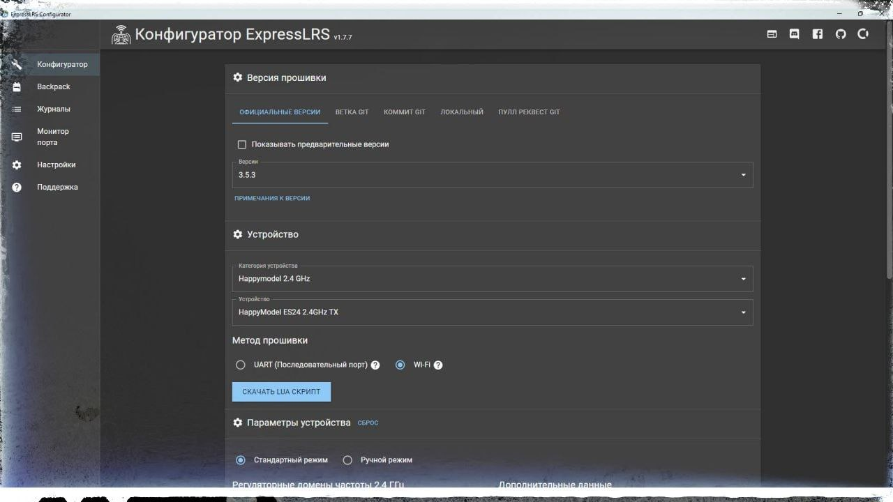

ExpressLRS Configurator, версия 1.7.7 для Windows
ℹ️ ExpressLRS Configurator - программа для сборки прошивок для оборудования ERLS (приемник/передатчик).
📎
🖥 Устанавливается на Windows. Запустить .EXE-файл, следовать сообщениям установщика.
⚠️ Для работы необходим интернет (даже если сборка делается на основе локальной папки).
#программное_обеспечение
#для_windows
#настройка_бпла
Это вложение из поста t.me/platforma_fpv/16/1123
ExpressLRS Configurator, версия 1.7.7 для Windows
ℹ️ ExpressLRS Configurator - программа для сборки прошивок для оборудования ERLS (приемник/передатчик).
📎
🖥 Устанавливается на Windows. Запустить .EXE-файл, следовать сообщениям установщика.
⚠️ Для работы необходим интернет (даже если сборка делается на основе локальной папки).
#программное_обеспечение
#для_windows
#настройка_бпла
Это вложение из поста t.me/platforma_fpv/16/1123
Перепрошивка ELRS-приемник если не работает кнопка BOOT.
Если не приемнике не работает кнопка BOOT или Milers не сбрасывается до настроек по-умолчанию,
приемник можно прошить методом Betaflight Passthrough через ExpressLRS Configurator.
- В данном методе НЕ нужен TTL-адаптер, НЕ нужно нажимать кнопку BOOT.
- С помощью этого способа можно прошить приемник на официальную прошивку, и дальше методом Wi-Fi
прошить уже на модифицированную прошивку.
ПОДГОТОВКА ОБОРУДОВАНИЯ.
ВАЖНО! Необходим интернет.
- Подключаем приемник к полетному контроллеру (пайкой или коннектором).
- Полетный контроллер подключаем USB-кабелем к компьютеру.
ПРОШИВКА.
- Запускаем ExpressLRS Configurator.
- В левом боковом меню выбираем раздел «Конфигуратор» (1.).
В разделе «Версия прошивки» можно выбрать официальную или неофициальную прошивку:
выбираем официальные версии (2.).
- В разделе «Устройство» выбираем Ваше оборудование:
пункт «Категория устройства» - выбираем производителя и основную частоту (900МГц/2,4ГГц/crossband)
оборудования,
*crossband – устройство, работающее в нескольких диапазонах, частота не указывается,
пункт «Устройство» - выбираем непосредственно модель устройства.
- В разделе «Метод прошивки» выбираем - Betaflight Passthrough.
- В разделе «Параметры устройства»:
выбираем «Стандартный режим» (1.).
«Регуляторные домены» для 900 МГц ставим – 915 МГц FCC, для 2,4 ГГц – 2,5 ГГц ISM (стандарт) (2.),
«Выбор бинд фразы» - можно сразу задать бинд фразу, тогда в оборудование зальется прошивка сразу с ней
(НЕ рекомендуем задавать бинд фразу, если собираете готовый файл) (3.),
в «Параметрах устройства» ничего не трогаем, оставляем по умолчанию (4.).
- В разделе «Действия», пункт «Ручной выбор последовательного порта устройства» выбираем порт, через
который подключено устройство.
посмотреть порт можно в диспетчере устройств, в разделе «Порты (COM и LPT)».
- Запускаем процесс прошивки нажатием кнопки «Прошить».
По завершению процесса появиться сообщение, что прошивка успешно выполнена.
Можно перезагружать приемник и прошивать уже на свою неофициальную прошивку методом Wi-Fi.
Если не приемнике не работает кнопка BOOT или Milers не сбрасывается до настроек по-умолчанию,
приемник можно прошить методом Betaflight Passthrough через ExpressLRS Configurator.
- В данном методе НЕ нужен TTL-адаптер, НЕ нужно нажимать кнопку BOOT.
- С помощью этого способа можно прошить приемник на официальную прошивку, и дальше методом Wi-Fi
прошить уже на модифицированную прошивку.
ПОДГОТОВКА ОБОРУДОВАНИЯ.
ВАЖНО! Необходим интернет.
- Подключаем приемник к полетному контроллеру (пайкой или коннектором).
- Полетный контроллер подключаем USB-кабелем к компьютеру.
ПРОШИВКА.
- Запускаем ExpressLRS Configurator.
- В левом боковом меню выбираем раздел «Конфигуратор» (1.).
В разделе «Версия прошивки» можно выбрать официальную или неофициальную прошивку:
выбираем официальные версии (2.).
- В разделе «Устройство» выбираем Ваше оборудование:
пункт «Категория устройства» - выбираем производителя и основную частоту (900МГц/2,4ГГц/crossband)
оборудования,
*crossband – устройство, работающее в нескольких диапазонах, частота не указывается,
пункт «Устройство» - выбираем непосредственно модель устройства.
- В разделе «Метод прошивки» выбираем - Betaflight Passthrough.
- В разделе «Параметры устройства»:
выбираем «Стандартный режим» (1.).
«Регуляторные домены» для 900 МГц ставим – 915 МГц FCC, для 2,4 ГГц – 2,5 ГГц ISM (стандарт) (2.),
«Выбор бинд фразы» - можно сразу задать бинд фразу, тогда в оборудование зальется прошивка сразу с ней
(НЕ рекомендуем задавать бинд фразу, если собираете готовый файл) (3.),
в «Параметрах устройства» ничего не трогаем, оставляем по умолчанию (4.).
- В разделе «Действия», пункт «Ручной выбор последовательного порта устройства» выбираем порт, через
который подключено устройство.
посмотреть порт можно в диспетчере устройств, в разделе «Порты (COM и LPT)».
- Запускаем процесс прошивки нажатием кнопки «Прошить».
По завершению процесса появиться сообщение, что прошивка успешно выполнена.
Можно перезагружать приемник и прошивать уже на свою неофициальную прошивку методом Wi-Fi.
Это вложение из поста t.me/platforma_fpv/35/1235
Перепрошивка ELRS (передатчик/приемник) с помощью готового
(скомпилированного) файла.
Приемник.
1. Загружаем готовые файлы на устройство, с которого собираемся перепрошивать: телефон, ноутбук,
компьютер (c Wi-Fi).
2. Подаем питание на приемник, любым доступным способом
- подключаем к дрону: коннектором, пайкой; подключаем батарею или USB (от компа, телефона,
PowerBank)
3. Запускаем раздачу WI-FI нажатием на кнопку boot (если есть, зажать кнопку, пока индикатор не
начнет быстро мигать) или дожидаемся автоматического перехода (20-30 секунд)
4. Подключается к сети ExpressLRS RX, пароль: expresslrs*
*на неофициальных прошивках сеть и пароль могут быть другими.
5. На компьютере или ноутбуке, после подключение автоматически отроется окно браузера с web-
интерфейсом
6. На телефоне нужно вручную открыть браузер (желательно хром) и набрать адрес 10.0.0.1
7. Выбрать пункт UPDATE
8. Выбрать необходимый файл (модель) и нажать UPDATE
9. После удачной перепрошивки, приемник перезагрузиться (начнет медленно мигать)
Передатчик.
1. Включаем пульт
2. Нажимаем кнопку SYS, выбираем пункт ExpressLRS, выбираем пункт WI-FI Conectivity, выбираем WI-FI
Enable
3. Подключается к сети ExpressLRS TX, пароль: expresslrs*
*на неофициальных прошивках сеть и пароль могут быть другими.
4. На компьютере или ноутбуке, после подключение автоматически отроется окно браузера с web-
интерфейсом
5. На телефоне нужно вручную открыть браузер (желательно хром) и набрать адрес 10.0.0.1
6. Выбрать пункт UPDATE
7. Выбрать необходимый файл (модель) и нажать UPDATE
8. После удачной перепрошивки, передатчик автоматически отключит Wi-Fi
*ВАЖНО!!! Приемник и передатчик должны быть выставлены на ОДНУ и туже частоту, иначе не забиндяться
**Файлы скомпилированы БЕЗ биндовой фразы, для бинда нужно вручную установить свои биндовые фразы
***Версия прошивок 3.3.2
Если начальная версия передатчика 2.Х.Х, его нужно стандартным способом прошить до версии 3.Х.Х
- для этого прошиваем до максимальной прошивки 2.5.2
- скачиваем специальную прошивку Repartitioner - https://disk.yandex.ru/d/b6j8kUzLMYbWKw
- заливаем ее в передатчик
- будет ругаться на Target Mismatch (не совпадение таргетов), просто жмите Flash Anyway
- можно загружать прошивку 3.Х.Х
****Частота указана в названии файла, а таже, можно увидеть в шапке web-интерфейса, по умолчанию, после
прошивки стоит FCC915
(скомпилированного) файла.
Приемник.
1. Загружаем готовые файлы на устройство, с которого собираемся перепрошивать: телефон, ноутбук,
компьютер (c Wi-Fi).
2. Подаем питание на приемник, любым доступным способом
- подключаем к дрону: коннектором, пайкой; подключаем батарею или USB (от компа, телефона,
PowerBank)
3. Запускаем раздачу WI-FI нажатием на кнопку boot (если есть, зажать кнопку, пока индикатор не
начнет быстро мигать) или дожидаемся автоматического перехода (20-30 секунд)
4. Подключается к сети ExpressLRS RX, пароль: expresslrs*
*на неофициальных прошивках сеть и пароль могут быть другими.
5. На компьютере или ноутбуке, после подключение автоматически отроется окно браузера с web-
интерфейсом
6. На телефоне нужно вручную открыть браузер (желательно хром) и набрать адрес 10.0.0.1
7. Выбрать пункт UPDATE
8. Выбрать необходимый файл (модель) и нажать UPDATE
9. После удачной перепрошивки, приемник перезагрузиться (начнет медленно мигать)
Передатчик.
1. Включаем пульт
2. Нажимаем кнопку SYS, выбираем пункт ExpressLRS, выбираем пункт WI-FI Conectivity, выбираем WI-FI
Enable
3. Подключается к сети ExpressLRS TX, пароль: expresslrs*
*на неофициальных прошивках сеть и пароль могут быть другими.
4. На компьютере или ноутбуке, после подключение автоматически отроется окно браузера с web-
интерфейсом
5. На телефоне нужно вручную открыть браузер (желательно хром) и набрать адрес 10.0.0.1
6. Выбрать пункт UPDATE
7. Выбрать необходимый файл (модель) и нажать UPDATE
8. После удачной перепрошивки, передатчик автоматически отключит Wi-Fi
*ВАЖНО!!! Приемник и передатчик должны быть выставлены на ОДНУ и туже частоту, иначе не забиндяться
**Файлы скомпилированы БЕЗ биндовой фразы, для бинда нужно вручную установить свои биндовые фразы
***Версия прошивок 3.3.2
Если начальная версия передатчика 2.Х.Х, его нужно стандартным способом прошить до версии 3.Х.Х
- для этого прошиваем до максимальной прошивки 2.5.2
- скачиваем специальную прошивку Repartitioner - https://disk.yandex.ru/d/b6j8kUzLMYbWKw
- заливаем ее в передатчик
- будет ругаться на Target Mismatch (не совпадение таргетов), просто жмите Flash Anyway
- можно загружать прошивку 3.Х.Х
****Частота указана в названии файла, а таже, можно увидеть в шапке web-интерфейса, по умолчанию, после
прошивки стоит FCC915
Это вложение из поста t.me/platforma_fpv/107/1152
Как прошить приемник ERLS, если не работает кнопка BOOT.
ℹ️ Метод прошивки: через полетный контроллер "Betaflight Passthrough".
Вам понадобится:
- приемник ELRS, который нужно прошить;
- полетный контроллер;
- USB-кабель (для подключения полетного контроллера к компьютеру);
- набор для пайки (если приемник не подключается через шлейф);
-
;
- интернет.
Порядок прошивки
.
- подключаем приемник к полетному контроллеру (пайкой, через коннектор);
- полетный контроллер подключаем USB-кабелем к компьютеру;
- запускаем
;
- в "Метод прошивки" выбираем "Betaflight Passthrough";
- запускаем прошивку.
📎 Скачать инструкцию
⚠️ Таким методом приемник прошивается на официальную прошивку.
Сеть Wi-Fi: ExpressLRS RX,
Пароль: expresslrs
Дальше
уже можно прошить на свою прошивку.
#ПРОШИВКА
#FPV
#техник_fpv
#управление
Веб-страница создана автоматически на основе поста пользователя ПЛАТФОРМА_FPV